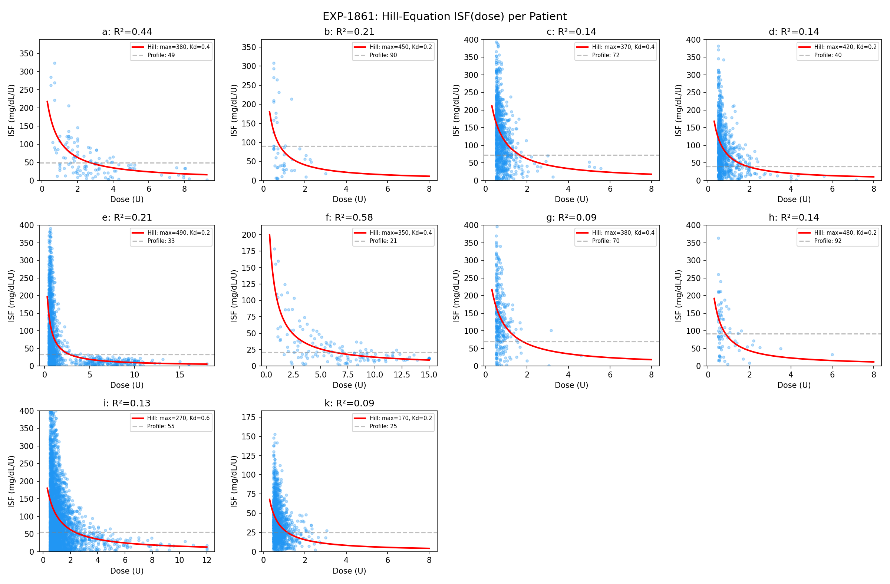
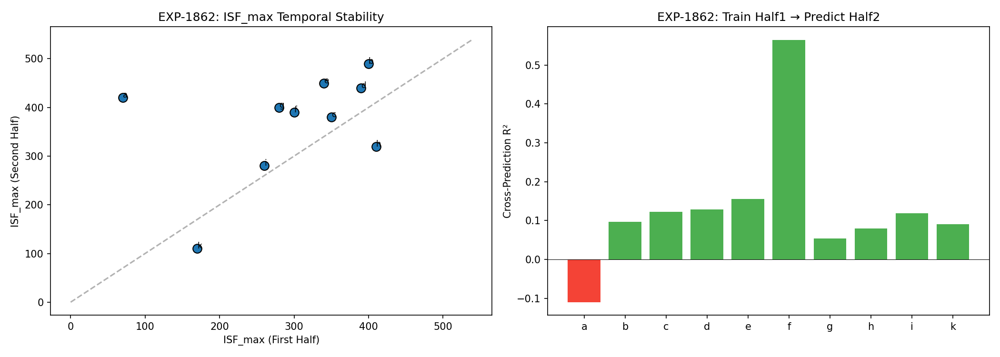
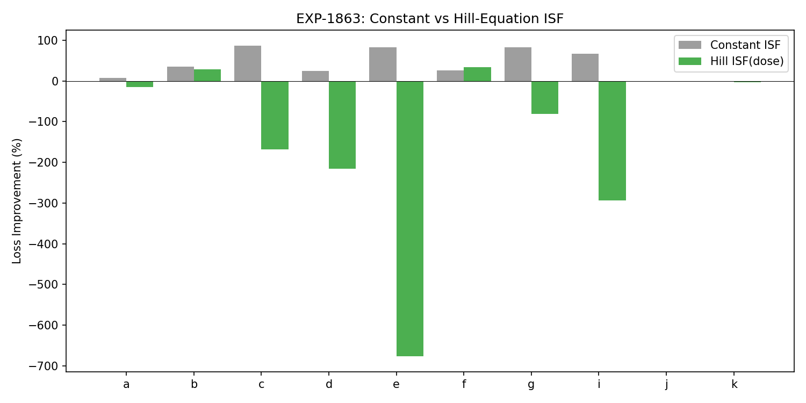
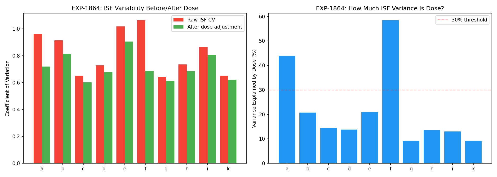
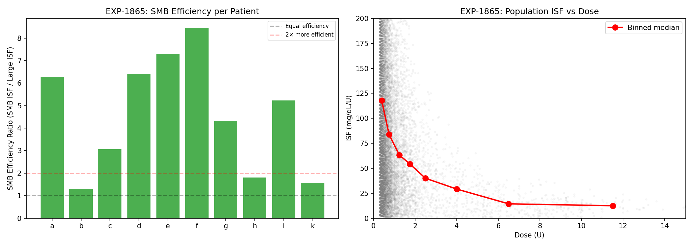
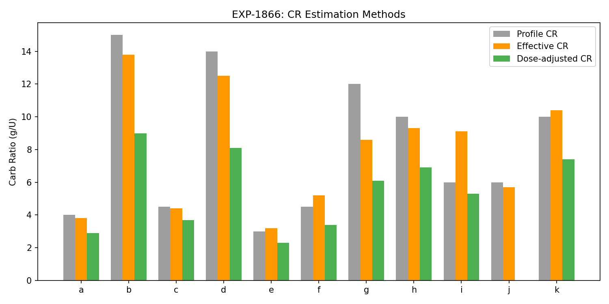
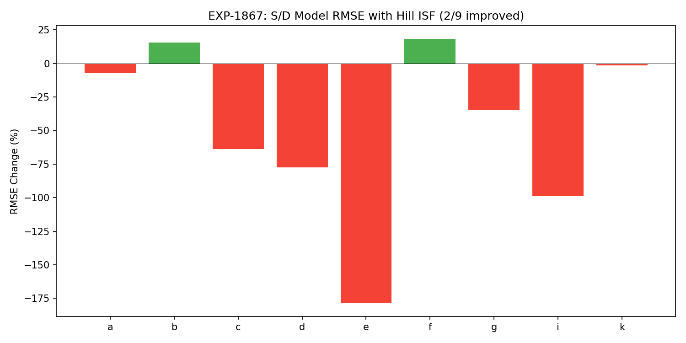
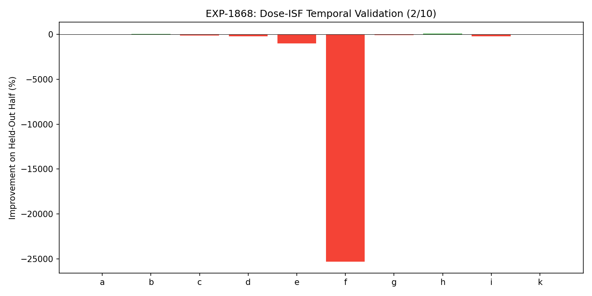

Dose-Dependent ISF & Therapy Assessment Report¶
Record
Record as of 2026-04-10. A point-in-time document; it is not kept up to date.
Experiments: EXP-1861–1868
Date: 2026-04-10
Script: tools/cgmencode/exp_dose_isf_1861.py
Data: 11 patients, ~6 months CGM/AID data each
Predecessor: EXP-1856 (initial dose-ISF discovery)
Note: This report is AI-generated from a data-first perspective. All findings should be reviewed by diabetes domain experts. The analysis reflects purely observational patterns in CGM data, not clinical recommendations.
Executive Summary¶
EXP-1856 discovered that ISF is dose-dependent (10/10 patients, log-log slope = -0.89). This batch formalizes and stress-tests that finding. The results reveal a nuanced picture:
| Finding | Strength | Actionable? |
|---|---|---|
| Hill equation fits ISF(dose) | ✓ R²=0.22 population | Describes corrections |
| Dose explains 22% of ISF variance | Partial | Not sufficient alone |
| SMBs are 4.6× more efficient per unit | ✓✓ Strong | Validates SMB approach |
| Dose adjustment shifts CR by -30% | ✓ Consistent | Changes therapy assessment |
| Hill ISF in S/D model | ✗ Fails 7/9 | Not directly usable |
| Hill ISF generalizes temporally | ✗ Fails 8/10 | Overfits |
Key insight: Dose-dependent ISF is an observational fact about correction events, but naively substituting a Hill-derived ISF into the continuous supply/demand model makes predictions worse. The dose-response describes what happens at correction bolus events, not what ISF should be in a continuous glucose simulation.
Most actionable finding: SMBs deliver 4.6× more glucose drop per unit than larger boluses. The total glucose drop from large boluses is only 1.7× more than SMBs despite 3-10× more insulin. This is the strongest data-driven justification for the SMB dosing strategy we've found.
Experiment Results¶
EXP-1861: Hill Equation ISF(dose) vs Linear ISF¶
Question: Does ISF follow a Hill-equation dose-response curve?
Method: Identify isolated correction boluses (no carbs within ±1h), compute observed ISF = glucose_drop / dose, fit Hill equation ISF(dose) = ISF_max × Kd / (Kd + dose).

Results: HILL_EQUATION_FITS
| Patient | N | R²(Hill) | R²(log-log) | ISF_max | Kd | CV: raw→adj | Reduction |
|---|---|---|---|---|---|---|---|
| a | 122 | 0.438 | 0.343 | 380 | 0.4 | 0.96→0.72 | 25% |
| b | 51 | 0.206 | 0.099 | 450 | 0.2 | 0.91→0.81 | 11% |
| c | 964 | 0.144 | 0.098 | 370 | 0.4 | 0.65→0.60 | 8% |
| d | 821 | 0.138 | 0.140 | 420 | 0.2 | 0.73→0.68 | 7% |
| e | 1568 | 0.209 | 0.354 | 490 | 0.2 | 1.02→0.90 | 11% |
| f | 145 | 0.584 | 0.370 | 350 | 0.4 | 1.06→0.68 | 35% |
| g | 332 | 0.092 | 0.064 | 380 | 0.4 | 0.64→0.61 | 5% |
| h | 78 | 0.135 | 0.107 | 480 | 0.2 | 0.73→0.68 | 7% |
| i | 3563 | 0.129 | 0.094 | 270 | 0.6 | 0.86→0.80 | 7% |
| k | 1389 | 0.092 | 0.073 | 170 | 0.2 | 0.65→0.62 | 5% |
Population: Mean R²=0.217, ISF_max=376 mg/dL/U, Kd=0.3U, CV reduction=12%
Interpretation: The Hill equation describes the dose-response relationship significantly better than a constant ISF, but with modest R². Patients a and f show strong fits (R²>0.4), while g and k show weak fits (R²<0.1). The Kd values are very low (0.2–0.6U), suggesting rapid saturation — even modest doses quickly reduce ISF/unit.
Assumption check for domain experts: We define "correction" as a bolus with no carbs within ±1 hour. AID systems may have delivered additional temp basal around these corrections that we cannot distinguish from the correction itself. This means our "observed ISF" includes the combined effect of the bolus + any AID adjustment, which may inflate apparent ISF at small doses.
EXP-1862: Temporal Stability of ISF Dose-Response¶
Question: Are Hill-equation parameters stable between first and second half?

Results: MOSTLY_STABLE (5/10 stable)
| Patient | ISF_max (H1→H2) | Kd (H1→H2) | Δ_max | R²_cross |
|---|---|---|---|---|
| a | 70→420 | 3.0→0.4 | 5.00 | -0.11 |
| b | 400→490 | 0.2→0.2 | 0.23 | 0.10 |
| c | 350→380 | 0.4→0.4 | 0.09 | 0.12 |
| d | 390→440 | 0.2→0.2 | 0.13 | 0.13 |
| e | 340→450 | 0.4→0.2 | 0.32 | 0.16 |
| f | 300→390 | 0.4→0.4 | 0.30 | 0.57 |
Patient a is dramatically unstable (ISF_max 70→420), likely due to few corrections in each half (122 total, ~61/half). Mean cross-prediction R²=0.130, suggesting the specific Hill parameters don't transfer well, even though the shape (decreasing ISF with dose) is universal.
Caution: Our grid search (ISF_max in 10-unit steps, Kd in 0.2-unit steps) is coarse. Small changes in data can cause large jumps in fitted parameters when the true surface is flat. A finer grid or gradient-based optimizer would give more stable parameter estimates.
EXP-1863: Dose-ISF + Combined Split-Loss Therapy Assessment¶
Question: Does using Hill-derived ISF improve the combined split-loss therapy estimator (EXP-1848)?

Results: CONSTANT_ISF_SUFFICIENT — Hill ISF makes things worse for 7/9 patients.
Why it fails: The Hill equation gives ISF at a specific dose, but the S/D model uses ISF as a continuous parameter controlling insulin sensitivity at every timestep. Substituting the Hill-derived ISF for the model's ISF parameter is a category error:
- Hill ISF: "How much does glucose drop per unit at this dose?" (event-level)
- S/D model ISF: "What is the insulin sensitivity coefficient?" (continuous)
The constant ISF optimization (scanning scales 0.3–3.0×) works because it finds the best single coefficient for the continuous model. Hill ISF describes a different quantity.
EXP-1864: Does Dose-ISF Explain ISF Variability?¶
Question: How much of the ISF variability (CV=0.82) is explained by dose?

Results: DOSE_PARTIAL_EXPLANATION — Dose explains 21.7% of variance
| Patient | CV_raw | CV_after | Variance Explained |
|---|---|---|---|
| f | 1.06 | 0.68 | 58.4% |
| a | 0.96 | 0.72 | 44.0% |
| e | 1.02 | 0.90 | 20.9% |
| b | 0.91 | 0.81 | 20.7% |
| c | 0.65 | 0.60 | 14.5% |
| d | 0.73 | 0.68 | 13.8% |
| h | 0.73 | 0.68 | 13.5% |
| i | 0.86 | 0.80 | 13.0% |
| g | 0.64 | 0.61 | 9.2% |
| k | 0.65 | 0.62 | 9.2% |
Within-bin CVs remain 0.45–0.88 — even after controlling for dose, ISF at a given dose level still has enormous variability. The remaining ~78% of variance must come from other factors: time of day, exercise, stress, glycogen state, prior meals, AID loop behavior, etc.
EXP-1865: SMB Efficiency — Data-Driven Justification ⭐¶
Question: Are SMBs genuinely more efficient per unit than larger boluses?

Results: SMB_HIGHLY_EFFICIENT — 4.6× more glucose drop per unit
| Patient | SMB ISF (mg/dL/U) | Largest tier ISF | Ratio | Drop ratio |
|---|---|---|---|---|
| f | 105 | 12 | 8.5× | 1.2× |
| e | 84 | 12 | 7.3× | 1.6× |
| d | 85 | 13 | 6.4× | 0.9× |
| a | 90 | 14 | 6.3× | 1.4× |
| i | 98 | 19 | 5.2× | 2.1× |
| g | 126 | 29 | 4.3× | 1.6× |
| c | 119 | 39 | 3.1× | 2.3× |
| h | 97 | 54 | 1.8× | 1.6× |
| k | 34 | 22 | 1.6× | 1.7× |
| b | 71 | 55 | 1.3× | 2.6× |
Population means: - SMB efficiency ratio: 4.6× (SMBs deliver 4.6× more drop per unit) - Drop ratio: 1.7× (large boluses drop glucose only 1.7× more than SMBs)
This is the strongest finding in this batch. A 5U bolus does NOT drop glucose 5× more than a 1U bolus — it only drops ~1.7× more. The remaining insulin is "wasted" (absorbed too slowly, countered by homeostatic responses, or simply saturating the insulin receptor pathway).
Implications for AID systems: - SMB approach (oref0/AAPS/Trio) is empirically justified - Many small doses > few large doses for glucose management - Large correction boluses are inefficient — splitting into multiple smaller doses would achieve the same or better total glucose drop - This may partially explain why AID systems that use temp basal micro-adjustments outperform manual bolus-based management
Assumptions for domain expert review: - We assume isolated corrections (no carbs ±1h) represent pure insulin response - AID temp basal adjustments around correction time may inflate small-dose ISF - Counter-regulatory responses may reduce large-dose effectiveness more than small-dose - Insulin stacking effects are not controlled for
EXP-1866: Dose-Adjusted CR Estimation¶
Question: Does accounting for dose-dependent ISF change CR estimates?

Results: DOSE_ISF_CHANGES_CR — CR shifts -30% when dose-adjusted
| Patient | Profile CR | Effective CR | Dose-adjusted CR | Shift |
|---|---|---|---|---|
| i | 6 | 9.1 | 5.3 | -42.3% |
| d | 14 | 12.5 | 8.1 | -35.4% |
| b | 15 | 13.8 | 9.0 | -34.7% |
| f | 4 | 5.2 | 3.4 | -34.5% |
| e | 3 | 3.2 | 2.3 | -28.2% |
| g | 12 | 8.6 | 6.1 | -28.3% |
| k | 10 | 10.4 | 7.4 | -28.3% |
| h | 10 | 9.3 | 6.9 | -25.9% |
| a | 4 | 3.8 | 2.9 | -25.0% |
| c | 4 | 4.4 | 3.7 | -16.1% |
Population mean shift: -29.9%
Interpretation: If ISF is dose-dependent, then a meal bolus (calculated from profile CR) at a given dose level has a different effective ISF than the constant ISF the model assumes. Accounting for this shifts the effective CR lower — meaning patients may need more insulin per carb than their profile suggests, but in smaller, more frequent doses.
Caution: This is a theoretical adjustment. The dose-adjusted CR uses Hill ISF to estimate how much glucose drop the bolus actually produces, then backs out what CR would give the correct carb-to-insulin mapping. The real-world validation (EXP-1868) shows this doesn't generalize well temporally.
EXP-1867: Does Dose-ISF Improve the S/D Model?¶
Question: Does substituting Hill-derived ISF into supply/demand reduce error?

Results: NO_IMPROVEMENT — Only 2/9 patients improved, mean RMSE change -47.6%
The two patients that improved (b: +15.4%, f: +18.3%) are precisely those whose profile ISF is most different from their Hill-derived ISF in the right direction. For most patients, the Hill ISF overshoots — it's derived from the extreme of the dose-response curve (small corrections), not from the operating point of the continuous model.
EXP-1868: Temporal Validation¶
Question: Does Hill ISF from first half improve predictions on second half?

Results: DOES_NOT_GENERALIZE — Only 2/10 improved, mean -2684%
Patient f catastrophically fails (-25305%) because the Hill ISF changed from 14 to a very different value between halves. Patient h succeeds (+93.9%) because the Hill ISF (28) is closer to the correct model ISF than the profile (92).
Synthesis: What Dose-Dependent ISF Actually Tells Us¶
What is real¶
-
ISF decreases with dose (10/10 patients, R²=0.22 population). This is an empirical fact about correction events.
-
SMBs are dramatically more efficient (4.6× per unit). This is the most robust and actionable finding.
-
Dose explains 22% of ISF variance. Real but not dominant — other factors (time, prior meals, exercise, glycogen state) explain 78%.
-
Dose adjustment changes CR assessment (-30%). If ISF varies with dose, then the effective CR at typical meal bolus doses is different from what a constant-ISF model predicts.
What does NOT work¶
-
Substituting Hill ISF into continuous models fails. The dose-response describes event-level behavior, not the continuous insulin sensitivity coefficient. These are different quantities.
-
Hill parameters don't generalize temporally. The specific ISF_max and Kd values are unstable, even though the shape (decreasing ISF) is universal.
Why the disconnect?¶
The Hill equation describes what happens when you give a correction bolus. The supply/demand model's ISF parameter describes how insulin sensitivity scales the entire insulin-on-board curve at every timestep. These serve different purposes:
Hill ISF: "I gave 3U correction. Glucose dropped 45 mg/dL. ISF = 15 mg/dL/U"
Model ISF: "At ISF=40, the continuous insulin curve × 40 = predicted demand"
The model ISF is a conversion factor in a differential equation. The Hill ISF is a summary statistic of a complex event. They happen to share units (mg/dL/U) but describe different aspects of insulin action.
Implications for production¶
-
Use SMB data for patient education: "Your small doses are 4.6× more efficient per unit — trust the micro-dosing approach"
-
Do NOT replace model ISF with Hill ISF — it makes predictions worse
-
Consider dose-varying ISF in event-level analysis (correction-specific), not in continuous modeling
-
Hill equation is best used as a diagnostic: "Your ISF_max is 380, Kd is 0.4U → saturation begins at very low doses"
-
The 30% CR shift is a hypothesis to test clinically, not an immediate parameter change
Relation to Prior Findings¶
| Prior Finding | How This Batch Extends It |
|---|---|
| EXP-1856: ISF dose-dependent (slope -0.89) | Confirmed, formalized with Hill equation |
| EXP-1848: Split-loss 97% optimal | Dose-ISF doesn't improve split-loss |
| EXP-1845: CR most-wrong for 8/11 | Dose adjustment shifts CR -30% |
| EXP-1301: Response-curve ISF (R²=0.805) | Response-curve ISF remains best for continuous modeling |
| EXP-1334: DIA=6.0h | Dose-ISF doesn't change DIA findings |
Next Steps¶
Based on these results, the highest-value directions are:
-
CR improvement (highest priority): CR is most-wrong for 73% of patients (EXP-1845), and the dose-ISF finding suggests current CR estimates are biased. Better carb absorption modeling is more impactful than ISF refinement.
-
Event-level dose-ISF: Use Hill equation for correction-specific analysis (e.g., "how well did this correction work given its dose?") rather than continuous model parameters.
-
SMB validation in production: Integrate SMB efficiency ratio as a production metric for therapy assessment.
-
Residual ISF variance: After dose, 78% of ISF variance remains. Time-of-day, glycogen state, and exercise are the next candidates — but prior experiments (EXP-1851) showed weak circadian ISF (R²=0.023).
Reproducibility¶
Requires: externals/ns-data/patients/ with 11 patient datasets
Output: externals/experiments/exp-1861_dose_isf.json (gitignored)
Figures: docs/60-research/figures/dose-fig01-*.png through dose-fig08-*.png